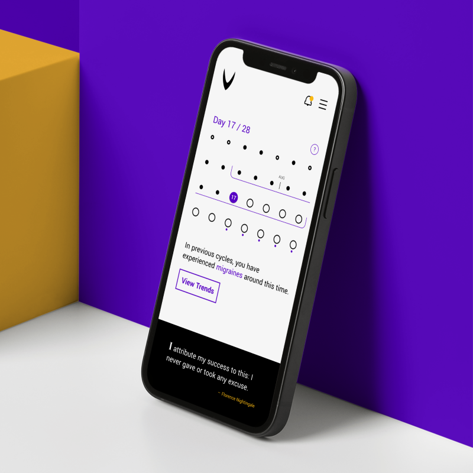
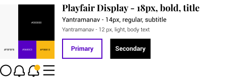
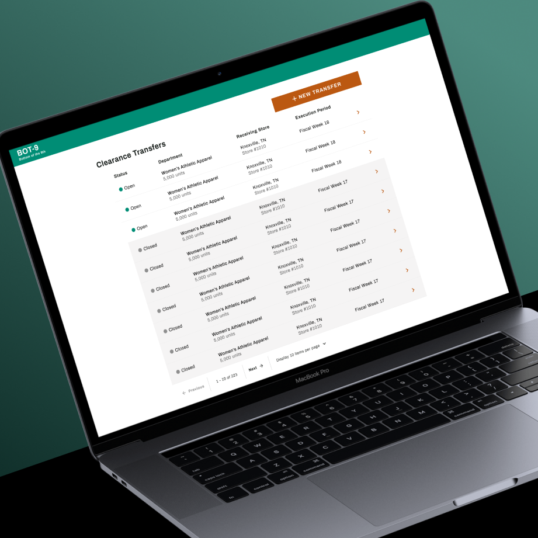
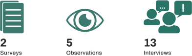
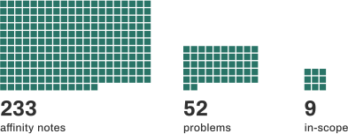
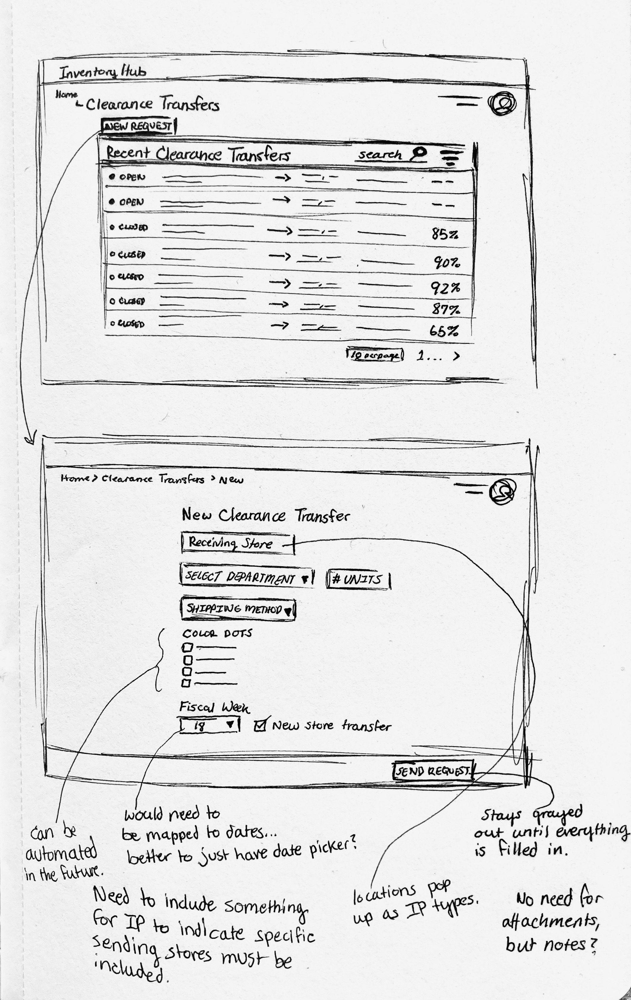
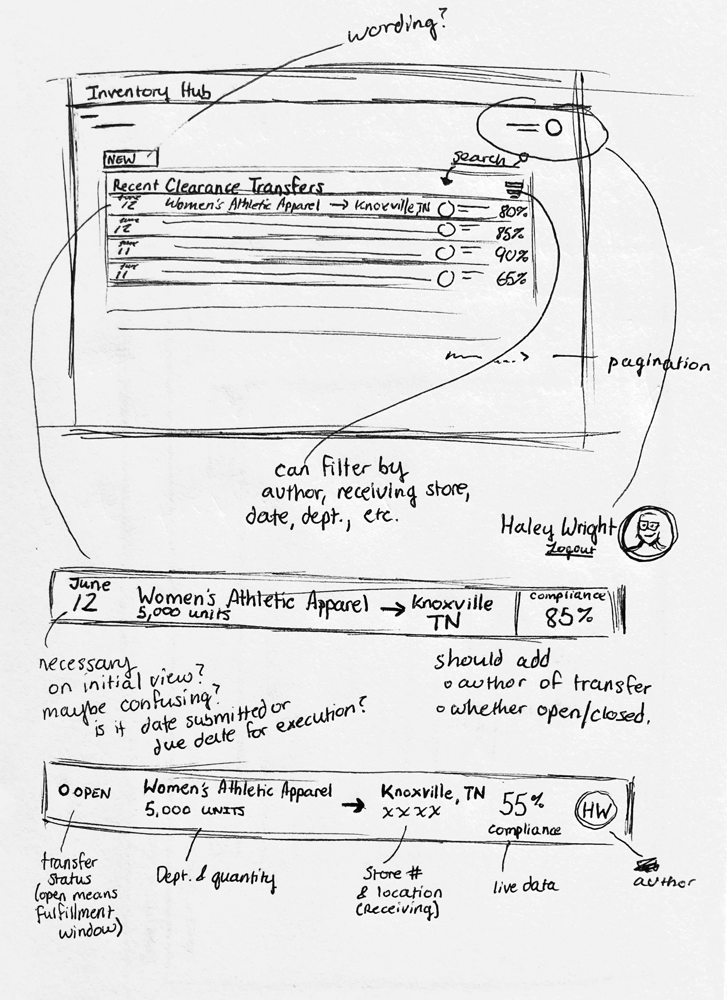

Virago
From the Latin “heroic woman, female warrior.”
I was inspired to begin this project after struggling to find a menstrual cycle tracking app that wasn't saturated in pink.
Additionally, many of these apps contain a plethora of features that aren't directly related to tracking one's cycle, making them feel cluttered or unfocused.
For people who are not hyper-feminine or want something simple, these apps may feel undesirable. The goal of this project was to create an application that was straightforward, free of frilly design, and felt empowering.
User Research
Competitive Analysis
Lo-Fi Prototypes
Style Guide

Hi-Fi Prototype

BOT-9
Handling product in the "bottom of the 9th" of its lifetime.
This is where information about my role and my teammates will go.
In 2021, Dick’s Sporting Goods (DSG) opened a few "Going, Going, Gone" stores, which receive
and sell the clearance product from the company’s 850 stores. This transition in how the business handles its end-of-life merchandise came with a set of challenges.
Because of some unique qualities that apply only to clearance product, the system for transferring regular merchandise
between DSG stores could not be used for mass transfers of clearance. On account of this, inventory planners had to develop
their own manual workaround for moving clearance product from regular DSG stores to these new “Going, Going, Gone” locations.
To better understand the situation surrounding clearance transfers, a discovery phase began that consisted of a sequence of surveys, observations, and interviews of teammates on both the corporate and store sides of the process.
Discovery

For observation, I spent hours with different inventory planners over 5 sessions as they prepared clearance transfer
orders to send to stores. This was so that I could thoroughly understand the inventory planner journey, what their needs and tools were, and where shortcomings might exist.
At a high level, the process being used involved manually determining what the inventory needs were at Going, Going, Gone locations, which DSG stores would receive clearance relief, what product should
be sent in the transfer, and when the transfer should be sent. The workaround journey for inventory planners had 26 manual steps that spanned across
6 different applications and necessitated the use of complicated spreadsheets and inexact calculations. Additionally, because of the workaround
process, teammates in DSG stores had little visibility into the clearance transfer orders they received and often lacked the guidance to
accurately and efficiently execute them. I cannot show the resulting user journeys due to NDA.

Lastly, I wrote and conducted semi-structured interviews with thirteen teammates to glean data about their experiences and what happens
when stores receive clearance transfer orders. After these interviews, I followed an affinity mapping process. Each interview
transcript was scoured for important pieces of information regarding user emotions, needs, struggles, and strengths. These bits were placed onto sticky notes,
which were then grouped and regrouped logically until patterns and themes began to emerge. These groupings ultimately revealed a set of 52 problem statements.
From those 52 statements, the team refined a group of 9 problems that were within the scope of a summer project. We chose to focus on the workflow of the inventory
planners because solving their workflow issues would likely also address other problems that appeared to be symptomatic.
The scope definition session was also informed by the results from two surveys that were given to stakeholders about their thoughts and priorities on the topic of clearance.
Design
After our project focus was defined, I began to consider what an optimal workflow might look like. I tried to view the process at
a high level to determine what steps needed to be manual and where there was opportunity to automate processes.
In the end, only 6 steps were identified as necessary for the inventory planners to manually handle, which were the following:
- When a transfer needs to take place.
- Which Going, Going, Gone store is receiving the clearance product.
- Which department's clearance product to include in the transfer.
- How many clearance units from that department need to be transferred.
- The age of clearance products to be included in the transfer.
- The shipping method for the transfer.
With this information in mind, I began to sketch out rough ideas on paper for how the interface could take shape. With each sketch, I noted down
things I liked, things I didn’t like, and questions I had about different choices. This allowed me to refine ideas as I quickly iterated through
drawings. I also had to keep in mind that I was working within the design system of DSG, so there are guidelines that I needed to follow.


After creating my sketches, I hosted a couple of design studios with inventory planners to see what their expectations for an interface were. I didn't
want to fight against their mental model of system functionality, even if it ended up looking a bit different. These, coupled with informal
feedback sessions, were immensely helpful in determining the application interface.
I also had a design critique with DSG's UX team using the first iteration of a prototype I created in Figma. This resulted in feedback that helped formulate a much stronger second iteration.
-- talk about high fi prototype and handing off to engineers --
Current Status
The wonderful developers I worked with this past summer did a great job implementing the proof of concept design. After presenting to our stakeholders,
our team was asked to present again to some of the DSG VPs, including the CTO. The details of how BOT-9 would be implemented are still being ironed out, but the project continues beyond our first iteration.
Takeaways
Regarding the retail sector specifically, I learned that projects move quickly. In academia, we often do things to the exact letter of a UX process.
However, in the real world, sometimes UX researchers and designers don't have the time to fully flesh every detail out, no matter how much they want to. We have to
make decisions about what we focus on.
On an interpersonal level, there was initially tension in the early stages due to role conflation, but we had a meeting where we defined the roles of each team member to clear things up. That was good because
I had never experienced a situation where another team member and I had conflicting views on roles and expectations.
Hello, I'm Anna Jacobsen.
I am a human-computer interaction master's student at the Rochester Institute of Technology. While I am interested in all facets of the user experience, I especially enjoy qualitative research and design.
My thesis work focuses on the accessibility of technology in brick-and-mortar retail environments. Technology is rapidly gaining traction in the retail sector as a means of keeping customers in stores (and offline), but accessibility is not being heavily considered in its development. Ensuring that retail environments remain accessible to everyone is important because shopping for oneself is a necessary function for personal autonomy and expression, which are directly related to one's well being.
In my spare time, you can find me hanging out with my cats Jack and Ada, coding, reading, or doing anything outdoors.